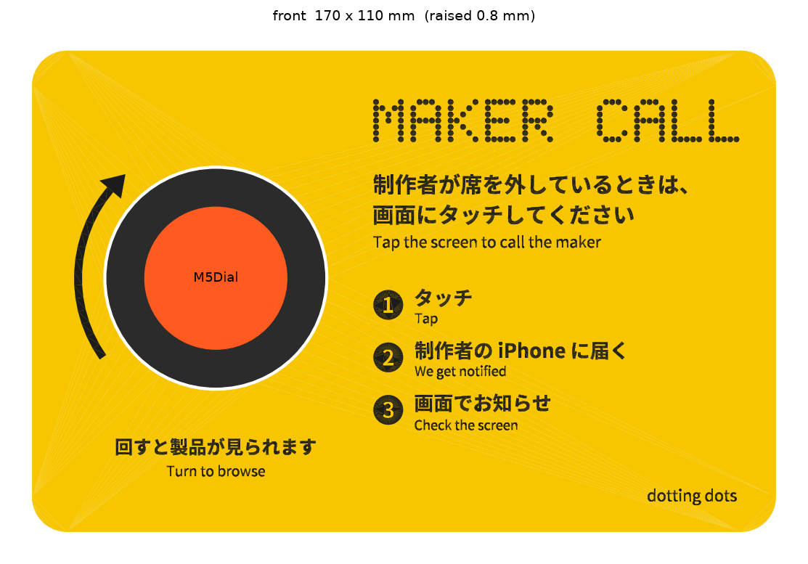

A. 縦長の看板
120 × 170 mm · 厚さ 4 mm
- 上から順に読める、いちばん素直な看板
- 3ステップを大きく入れられる
- 背が高いので、立てると少しぐらつきやすい
展示ブースの机に立てて置く、呼び出しボタンのプレートです。Bambu Lab A1 mini (造形範囲 180 × 180 × 180 mm) で、文字と装飾を少し盛り上げて2色で造形します。形は B 横長 (170 × 110 mm) に決まり、3D モデルを作りました。下のビューアで回して確かめられます。
ドラッグで回転、ホイールやピンチで拡大できます。M5Dial とバッテリーは、位置を確かめるための仮の形です (公式データの寸法から作った円柱と箱)。
読み込み中…

提案から変えた点:見出しのドットは右端に収まるよう間隔を詰めた (はみ出していたため)。3ステップは横3列だと「制作者の iPhone に届く」が 2.5 mm と小さく潰れるので、右の列に縦3行で並べた (日本語 4.5 mm、英語 3 mm)。
| ファイル | 大きさ | 数 | 色 | 造形 |
|---|---|---|---|---|
plate_base.stlplate_raised.stl | 170 × 110 × 4.7 + 盛り上げ 0.8 | 1 | 2色 (地 / 文字) | 表を上にして平らに。Bambu Studio で2つを「1つのオブジェクトの複数パーツ」として読み込み、色を割り当てる。色が替わるのは高さ 4.7 mm の1回だけ |
clamp_ring.stl | Ø66 × 3 | 1 | グレー | 平らに。サポート不要 |
foot.stl | 20 × 92 × 17.8 | 2 | グレー | そのままの向きで (底が平ら)。サポート不要 |
oyobidashi_plate.step | 組み立てた状態の STEP。寸法の確認や、Rhino などでの手直しに | |||
目安の設定:ノズル 0.4 mm、積層 0.2 mm (盛り上げは4層)、壁 3周、インフィル 15%。ファイルは plate/out/、作り直しは plate/make_plate.py (寸法はファイルの先頭にまとめてある)。
| もの | 寸法 | 設計で気をつけること |
|---|---|---|
| M5Dial 全体 | Ø51.0 × 奥行 32.3 mm | 公式データ (Dial.stl) と公式仕様から。46 g |
| 回るリング (前面) | Ø49.7、奥行 約10 mm | 製品カードと担当者メニューで回すので、指でつまめるように前に出す |
| 回らないフランジ | Ø50.9、奥行 約4 mm | ここを後ろから受けて、押されたときの力を支える |
| 背面の本体 | Ø44、奥行 約12 mm | プレートの裏に出る。USB-C と端子の位置は実物で確認が必要 |
| モバイルバッテリー | 92 × 60 × 22 mm、約180 g | Anker PowerCore 10000 (A1263)。背面に両面テープ。重りにもなる |
| A1 mini | 180 × 180 × 180 mm、4色まで | 今回は2色。平らな板を、表を下にして造形すると文字がきれい |
どの案も、文言の役割は同じです。遠くから「何のプレートか」を伝える見出し、近づいた人への一文と3ステップ、M5Dial のまわりの「回せる」サインです。見出しの英語は、画面と同じ 5×7 のドットで描きます。dotting dots のドットとして、2色目でくっきり出ます。
色の比較:オレンジ地は、待機画面の「オレンジ = 触れる番」をプレート全体に広げる案です。遠くから目に入り、プレートごとボタンに見えます。黒地は、M5Dial の黒いリングと一体に見え、落ち着いた印象です。
プレートは平らな板として造形し、裏に差し込む脚 (別に平らに造形) で後ろへ18°傾けて立てます。M5Dial は前からリングを出し、フランジを裏の受けで支えて、裏から押さえのリングでとめます。触れたときに後ろへ押されても、脚とバッテリーの重さで倒れにくくなります。
| 部品 | 造形 | 役割 |
|---|---|---|
| プレート | 表を下にして平らに。2色 (文字は表面から 0.6 mm 埋め込み) | 看板。M5Dial の穴と、裏の受けのリングを一体で |
| 押さえのリング | 平らに、1色 | M5Dial を裏からはさんで固定。ねじ2本か、回して締めるツメ |
| 脚 | 平らに、1色 | 裏の溝に差し込んで18°に立てる。外せば平らにしまえる |
| 場所 | 日本語 | 英語 |
|---|---|---|
| 見出し (ドット) | − | MAKER CALL |
| 一文 | 制作者が席を外しているときは、画面にタッチしてください | Tap the screen to call the maker |
| 3ステップ | 1 タッチ / 2 制作者の iPhone に届く / 3 画面でお知らせ | Tap / We get notified / Check the screen |
| ダイヤルのサイン | 回すと製品が見られます | Turn to browse |
| ブランド | − | dotting dots |
2色の造形では、細い線が潰れやすいので、日本語は高さ 5 mm 以上、英語の小さな文字は 3.5 mm 以上を目安にしています。